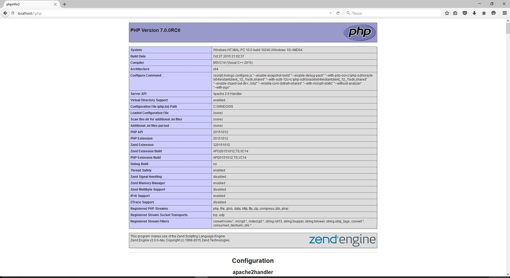

В дополнение к обеспечению контроля над сетевыми ресурсами сервер выполняет следующие функции:
Локальный сервер очень полезный инструмент. Он точно пригодиться веб-мастерам, программистам на PHP, тестерам на проникновение. Все программы, входящие в типичную установку веб-сервера, являются бесплатными, у всех у них открыт исходный код. Локальный веб-сервер потребляет минимум ресурсов и, на самом деле, его совсем нетрудно установить и настроить.
Эта инструкция расскажет о том, как установить локальный веб-сервер без использования готовых сборок. Этот способ имеет свои преимущества. Самыми важными из них являются: полный контроль на тем, что вы устанавливаете; возможность использовать самые последние версии программного обеспечения.
Нам нужны:
Официальный сайт разработчиков Apache это httpd.apache.org. Можно скачать Apache с этого сайта. Но официальная версия собирается с использованием старого компилятора, по этой причине она не работает с новыми версиями PHP. Авторы PHP рекомендуют Apache с сайта apachelounge.com/download. Поэтому для этой инструкции скачиваем Apache именно с сайта apachelounge.com/download.
Если у вас 64-битная версия Windows, то вы можете выбрать как 64-битную, так и 32-битную версию компонентов. Главное правило - все компоненты должны быть одной битности. Если у вас 32-битная версия Windows, то все компоненты должны быть 32-битными. Это не относится к phpMyAdmin, который написан на языке PHP. Для PHP программ понятие битности неприменимо.
PHP 7 скачайте со страницы https://windows.php.net/download/. Выберите версию Thread Safe, обратите внимание на битность.
Бесплатная версия MySQL называется MySQL Community Server. Её можно скачать на странице https://dev.mysql.com/downloads/mysql/. На этой же странице есть установщик в виде исполнимого файла, но я рекомендую скачать ZIP-архив. На странице скачивания нам предлагают зарегистрироваться или войти в существующую учётную запись - но это делать необязательно. Достаточно нажать на ссылку «No thanks, just start my download». Обратите внимание на битность.
Сайт для скачивания phpMyAdmin phpmyadmin.net.
Ещё нам нужен файл C++ Redistributable Visual Studio 2017, т.е. Распространяемый компонент Visual C++ для Visual Studio 2017 (или любой другой более поздний), скачать его можно на официальном сайте Microsoft . Этот файл нужен для веб-сервера. А для MySQL необходим Распространяемые пакеты Visual C++ для Visual Studio 2015.
Итак, у меня скачались следующие файлы:
Установите файлы vc_redist.x64.exe и vcredist_x64.exe.
Создадим структуру каталогов нашего сервера. Главная идея - разделить исполнимые файлы и файлы сайтов с базами данных. Это удобно для обслуживания сервера, в том числе для резервного копирования.
В корне диска C:\ создайте каталог Server. В этом каталоге создайте 2 подкаталога: bin (для исполнимых файлов) и data.
Перейдите в каталог data и там создайте подпапки DB (для баз данных) и htdocs (для сайтов).
Перейдите в каталог C:\Server\data\DB\ и создайте там пустую папку data.
Содержимое скаченного архива (точнее говоря, только каталог Apache24), распакуйте в C:\Server\bin\.
Перейдите в каталог c:\Server\bin\Apache24\conf\ и откройте файл httpd.conf любым текстовым редактором.
В нём нам нужно заменить ряд строк.
Меняем
Define SRVROOT "c:/Apache24"на
Define SRVROOT "c:/Server/bin/Apache24"меняем
#ServerName www.example.com:80на
ServerName localhostменяем
DocumentRoot "${SRVROOT}/htdocs"на
DocumentRoot "c:/Server/data/htdocs/"меняем
<Directory "${SRVROOT}/htdocs">на
<Directory "c:/Server/data/htdocs/">меняем
DirectoryIndex index.htmlна
DirectoryIndex index.php index.html index.htmменяем
# AllowOverride controls what directives may be placed in .htaccess files.
# It can be "All", "None", or any combination of the keywords:
# AllowOverride FileInfo AuthConfig Limit
#
AllowOverride Noneна
# AllowOverride controls what directives may be placed in .htaccess files.
# It can be "All", "None", or any combination of the keywords:
# AllowOverride FileInfo AuthConfig Limit
AllowOverride Allи меняем
#LoadModule rewrite_module modules/mod_rewrite.soна
LoadModule rewrite_module modules/mod_rewrite.soСохраняем и закрываем файл. Всё, настройка Apache завершена!
Откройте командную строку (это можно сделать нажав одновременно клавиши Win+X). Выберите там Windows PowerShell (администратор) и скопируйте туда:
c:\Server\bin\Apache24\bin\httpd.exe -k installЕсли поступит запрос от файервола в отношение Apache, то нажмите Разрешить.
Теперь вводим в командную строку:
c:\Server\bin\Apache24\bin\httpd.exe -k startТеперь в браузере набираем http://localhost/ и видим следующее:
Это означает две вещи:
Можете поиграться — добавить в каталог любые html-файлы — полноценный веб-сервер работает.
В каталог bin распаковываем файлы MySQL (из архива mysql-8.0.11-winx64.zip). Переименовываем папку mysql-8.0.11-winx64 в mysql-8.0 (для краткости). Кстати, распакованная папка mysql-8.0 занимает около гигабайта!
Заходим в эту папку и создаём там файл my.ini Теперь открываем этот файл любым текстовым редактором.
Добавьте туда следующие строки:
[mysqld]
sql_mode=NO_ENGINE_SUBSTITUTION,STRICT_TRANS_TABLES
datadir="c:/Server/data/DB/data/"
>default_authentication_plugin=mysql_native_passwordСохраните и закройте его.
Настройка завершена, но нужно ещё выполнить инициализацию и установку, для этого открываем командную строку от имени администратора и последовательно вводим туда:
C:\Server\bin\mysql-8.0\bin\mysqld --initialize-insecure --user=root
C:\Server\bin\mysql-8.0\bin\mysqld --install
net start mysqlПо окончанию этого процесса в каталоге C:\Server\data\DB\data\ должны появиться автоматически сгенерированные файлы.
Теперь служба MySQL будет запускаться при каждом запуске Windows.
Если инициализация завершилась неудачей и в папке C:\Server\data\DB\data\ недостаёт файлов, а в логе ошибок C:\Server\data\DB\data\*.err вы видите примерно следующие записи:
[ERROR] InnoDB: Operating system error number 87 in a file operation
[ERROR] InnoDB: File .\ib_logfile101: 'aio write' return OS error 187.
[ERROR] InnoDB: Cannot continue operationТо для решения этой проблемы удалите всё содержимое папки C:\Server\data\DB\data\ и в файл my.ini добавьте ещё одну строчку:
innodb_flush_method=normalТеперь инициализируйте MySQL ещё раз:
C:\Server\bin\mysql-8.0\bin\mysqld --initialize-insecure --user=root
C:\Server\bin\mysql-8.0\bin\mysqld --install
net start mysqlВ папке c:\Server\bin\ создаём каталог PHP и копируем в него содержимое архива php-7.0.0RC6-Win32-VC14-x64.zip.
В файле c:\Server\bin\Apache24\conf\httpd.conf в самый конец добавляем строчки
PHPIniDir "C:/Server/bin/PHP"
AddHandler application/x-httpd-php .php
LoadModule php7_module "C:/Server/bin/PHP/php7apache2_4.dll"
И перезапускаем Apache
c:\Server\bin\Apache24\bin\httpd.exe -k restartВ каталоге c:\Server\data\htdocs\ создаём файл с названием i.php
Копируем в этот файл:
<?php
phpinfo ();В браузере откройте ссылку http://localhost/i.php. Если вы видите тоже самое, что на картинке, значит PHP работает:

Настройка PHP происходит в файле php.ini. В zip-архивах, предназначенных для ручной установки и для обновлений, php.ini нет (это сделано специально, чтобы случайно не затереть ваш файл, с вашими уникальными настройками). Зато есть два других, которые называются php.ini-development и php.ini-production. Любой из них, при ручной установке, можно переименовать в php.ini и настраивать дальше. На локалхосте мы будет использовать php.ini-development.
Открываем файл php.ini любым текстовым редактором, ищем строчку
; extension_dir = "ext"и заменяем её на
extension_dir = "C:\Server\bin\PHP\ext\"Теперь найдите группу строк:
;extension=bz2
;extension=curl
;extension=fileinfo
;extension=gd2
;extension=gettext
;extension=gmp
;extension=intl
;extension=imap
;extension=interbase
;extension=ldap
;extension=mbstring
;extension=exif ; Must be after mbstring as it depends on it
;extension=mysqli
;extension=oci8_12c ; Use with Oracle Database 12c Instant Client
;extension=openssl
;extension=pdo_firebird
;extension=pdo_mysql
;extension=pdo_oci
;extension=pdo_odbc
;extension=pdo_pgsql
;extension=pdo_sqlite
;extension=pgsql
;extension=shmopи замените её на:
extension=bz2
extension=curl
extension=fileinfo
extension=gd2
extension=gettext
extension=gmp
extension=intl
extension=imap
;extension=interbase
extension=ldap
extension=mbstring
extension=exif ; Must be after mbstring as it depends on it
extension=mysqli
;extension=oci8_12c ; Use with Oracle Database 12c Instant Client
extension=openssl
;extension=pdo_firebird
extension=pdo_mysql
;extension=pdo_oci
extension=pdo_odbc
extension=pdo_pgsql
extension=pdo_sqlite
extension=pgsql
extension=shmopтеперь раскомментируйте эту группу строк:
;extension=soap
;extension=sockets
;extension=sqlite3
;extension=tidy
;extension=xmlrpc
;extension=xslдолжно получиться:
extension=soap
extension=sockets
extension=sqlite3
extension=tidy
extension=xmlrpc
extension=xslЭтими действиями мы включили расширения. Они могут понадобиться в разных ситуациях для разных скриптов. Сохраняем файл и перезапускаем Apache.
В каталог c:\Server\data\htdocs\ копируем содержимое архива phpMyAdmin-4.5.1-all-languages.zip. Переименовываем phpMyAdmin-4.5.1-all-languages в phpmyadmin (для лаконичности)
В каталоге c:\Server\data\htdocs\phpmyadmin\ создаём файл config.inc.php и копируем туда:
<?php
/* Servers configuration */
$i = 0;
/* Server: localhost [1] */
$i++;
$cfg['Servers'][$i]['verbose'] = '';
$cfg['Servers'][$i]['host'] = 'localhost';
$cfg['Servers'][$i]['port'] = '';
$cfg['Servers'][$i]['socket'] = '';
$cfg['Servers'][$i]['connect_type'] = 'tcp';
$cfg['Servers'][$i]['extension'] = 'mysqli';
$cfg['Servers'][$i]['auth_type'] = 'cookie';
$cfg['Servers'][$i]['user'] = 'root';
$cfg['Servers'][$i]['password'] = '';
$cfg['Servers'][$i]['nopassword'] = true;
$cfg['Servers'][$i]['AllowNoPassword'] = true;
/* End of servers configuration */
$cfg['blowfish_secret'] = 'kjLGJ8g;Hj3mlHy+Gd~FE3mN{gIATs^1lX+T=KVYv{ubK*U0V';
$cfg['DefaultLang'] = 'ru';
$cfg['ServerDefault'] = 1;
$cfg['UploadDir'] = '';
$cfg['SaveDir'] = '';
?>
В браузере набираем http://localhost/phpmyadmin/
В качестве имя пользователя вводим root. Поле пароля оставляем пустым. Если всё сделано правильно, то всё должно выглядеть так:

В каталоге c:\Server\data\htdocs\ создавайте папки и файлы, например:
c:\Server\data\htdocs\test\ajax.php – этот файл, соответственно, будет доступен по адресу http://localhost/test/ajax.php и т.д.
Для создания полного бэкапа всех сайтов и баз данных достаточно скопировать каталог C:\Server\data\.
Перед обновлением модулей, делайте бэкап папки bin – в случае возникновения проблем, можно будет легко откатиться к предыдущим версиям.
При повторной установке сервера или при его обновлении, необходимо заново настраивать конфигурационные файлы. Если у вас есть копии этих файлов, то процесс можно значительно ускорить. Желательно забэкапить следующие файлы:
В них и хранятся все настройки.